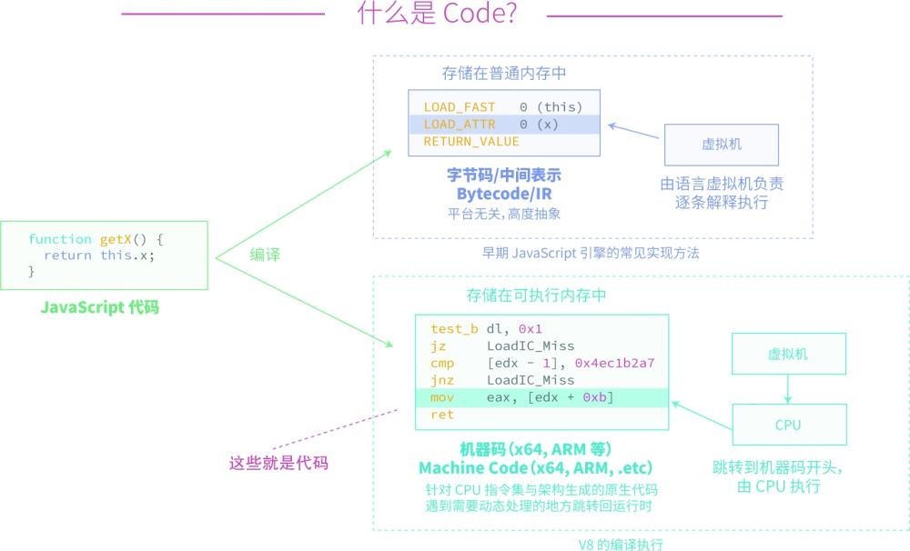
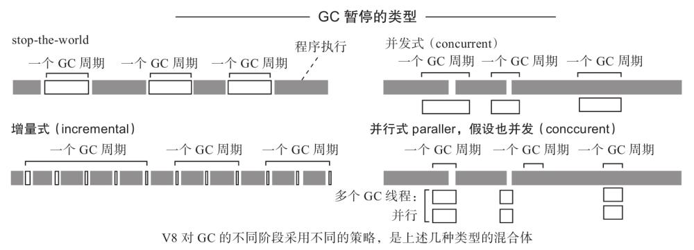
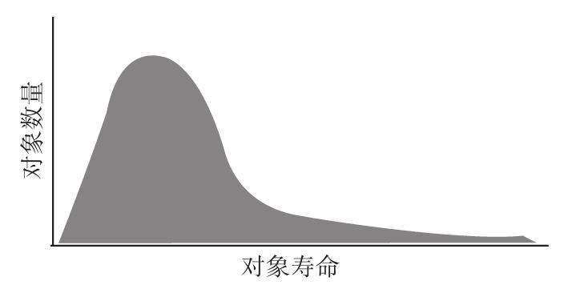

首页 > 编程笔记
V8引擎简介（非常详细）
V8 是 Google 为 Chrome 浏览器设计的 JavaScript 执行引擎，其初衷与目标是为 Chrome 设计一个领先行业的高性能 JavaScript 引擎，从此 JavaScript 被分为前 V8 时代与后 V8 时代。
在前 V8 时代，JavaScript 是一门纯解释性质的动态脚步语言，浏览器一行一行地执行 JavaScript。在后 V8 时代，JavaScript 成为一种类似 Java 的编译语言，在 V8 之后，现代浏览器（包括新的 IE）都是将 JavaScript 直接编译成机器指令直接让 CPU 执行。
然而发明人和这些公司也许没有想到，到了后 V8 时代，JavaScript 越来越像 Java，程序员们越来越多地使用 JavaScript 来完成原来使用 Java 来完成的工作，JavaScript 真的成为 Script 版的 Java。
其实在 V8 开发小组的一群程序语言专家中，核心工程师 Lars Bak 之前研发了 HotSpot，这是用在 Sun Microsystems 公司开发的 Java 虚拟机器（VM）的加速技术，所以 V8 这一 Google 工程师实现的创新其实或多或少基于 Java 语言的探索与发展。最终凭借 V8 这一创新，Chrome 浏览器坐上浏览器市场占有率第一的宝座。
Java 语言中有两个过程：
Java 字节码在执行过程中有两种模式，最初通过类似脚本的语言逐条翻译执行，后来又引入了编译执行，即将经常执行的 Java 字节码做即时编译，编译成机器码，加速执行。
V8 引擎借鉴了 Java 的编译执行过程，也引入 Java 的虚拟机概念，将整个 V8 引擎打造成可以执行 JavaScript 的虚拟机。
同时，V8 借鉴了 Java 虚拟机的内存管理技术，采用垃圾回收（Garbage Collection，GC）技术来回收不再需要的内存空间。
每个 V8 引擎都是一个具有独立地址空间的虚拟机，不同的 JavaScript 程序在不同的虚拟机中执行，互不干扰，大大提高了 JavaScript 的稳定性。
如果分析 V8 源代码，可以发现 V8 仍然有类似 Java 字节码的中间过程，但是从外部看，V8 是直接将 JavaScript 编译成本地的机器语言的，然后通过 CPU 直接运行这些机器码。执行过程中，编译器不再对执行过程干预。所以，在 V8 中，编译与执行是两个不同的部分。
正是由于采用一次编译技术，V8 能够将所有现代编译器的优化能力都应用到 JavaScript 的编译中，实现对 JavaScript 的高度优化。
如果读者有能力阅读 V8 的源代码，可以清晰地看到 V8 的设计完全遵循了现代编译器的设计思路，包括前端语法树生产、中端语法树到中间语言的翻译、中间语言优化、后端中间语言到机器语言的编译等部分。
下图是 V8 的编译执行示意图：
但是像 JavaScript 这种脚本语言有一个不同于编译语言的特点，就是它的弱类型。换句话说，某个变量属于哪种类型只有在 JavaScript 语言运行过程中才能最终确定。
V8 的编译器为解决这种问题，引入了内联缓存技术来加速这类在编译期不能被优化的代码。
举一个简单的例子，下面是一个 JavaScript 读取属性的例子：
如果 V8 要在编译的代码中处理所有这些情况，即使一个简单的操作也会引发上百条指令。为了优化这种情况，V8 引擎需要对这个操作进行猜测。
V8 引入内联缓存机制，将猜测最可能的几个方法放到内联缓存中（类似于处理器使用高速缓存来提高指令命中率），如果 V8 猜对了就能大大提高这类访问的速度，如果没猜对，那么继续寻找、执行并发现正确方法，这样访问代价也不是很高。
脚本语言由于不能进行内存的控制，所以其内存管理策略只能选择与 Java 相似的管理策略，即采用垃圾回收系统管理内存。
由于 V8 的设计导向是性能优先，为保证快速的对象分配、缩短由垃圾回收造成的停顿以及避免内存碎片，其采用了一个这样的垃圾回收器。
图3是对象弱分代假设示意图。
准确式垃圾回收器避免了非准确式垃圾回收器带来的弊端，能够尽早无遗漏地回收内存，并且能够在垃圾回收过程中移动对象以缓解内存碎片问题。
目前 V8 对垃圾回收机制也在不断改进，正在朝着增量、并发、并行的方向前进，并在垃圾回收的不同阶段进行不同的优化，在未来 V8 可能会对物联网应用做进一步的优化。
读者可以在运行 Node.js 时加上 --trace_gc--trace_gc_verbose--print_cumulative_gc_stat 参数来观察 Node.js 详细的垃圾回收行为。
在前 V8 时代，JavaScript 是一门纯解释性质的动态脚步语言，浏览器一行一行地执行 JavaScript。在后 V8 时代，JavaScript 成为一种类似 Java 的编译语言，在 V8 之后，现代浏览器（包括新的 IE）都是将 JavaScript 直接编译成机器指令直接让 CPU 执行。
【扩展阅读】浏览器JavaScript发展简史
1995 年，当时在网景公司就职的布兰登·艾克正为 Netscape Navigator 2.0 浏览器开发一门名为 LiveScript 的脚本语言，后来由网景公司与昇阳电脑公司组成的开发联盟为了让这门语言搭上 Java 这个编程语言“热词”，将其临时改名为 JavaScript，日后这成为大众对这门语言有诸多误解的原因之一，虽然后来反复强调 JavaScript 和 Java 并没有任何联系。然而发明人和这些公司也许没有想到，到了后 V8 时代，JavaScript 越来越像 Java，程序员们越来越多地使用 JavaScript 来完成原来使用 Java 来完成的工作，JavaScript 真的成为 Script 版的 Java。
其实在 V8 开发小组的一群程序语言专家中，核心工程师 Lars Bak 之前研发了 HotSpot，这是用在 Sun Microsystems 公司开发的 Java 虚拟机器（VM）的加速技术，所以 V8 这一 Google 工程师实现的创新其实或多或少基于 Java 语言的探索与发展。最终凭借 V8 这一创新，Chrome 浏览器坐上浏览器市场占有率第一的宝座。
Java 语言中有两个过程：
- 一个是编译，将 Java 源代码编译成 Java 字节码（一种独立于机器的程序编码）；
- 另一个是执行，将 Java 字节码翻译成对应执行平台的机器码执行。
Java 字节码在执行过程中有两种模式，最初通过类似脚本的语言逐条翻译执行，后来又引入了编译执行，即将经常执行的 Java 字节码做即时编译，编译成机器码，加速执行。
V8 引擎借鉴了 Java 的编译执行过程，也引入 Java 的虚拟机概念，将整个 V8 引擎打造成可以执行 JavaScript 的虚拟机。
同时，V8 借鉴了 Java 虚拟机的内存管理技术，采用垃圾回收（Garbage Collection，GC）技术来回收不再需要的内存空间。
每个 V8 引擎都是一个具有独立地址空间的虚拟机，不同的 JavaScript 程序在不同的虚拟机中执行，互不干扰，大大提高了 JavaScript 的稳定性。
编译执行
V8 引擎的性能保障来源于其内置的 JavaScript 编译器，相比于 Java 的解释执行与即时编译，V8 采用了和 C# 一样的一次编译技术，也就是 V8 采用的编译执行策略是在 JavaScript 从服务器端完成加载后，预先对所有的 JavaScript 代码进行编译。如果分析 V8 源代码，可以发现 V8 仍然有类似 Java 字节码的中间过程，但是从外部看，V8 是直接将 JavaScript 编译成本地的机器语言的，然后通过 CPU 直接运行这些机器码。执行过程中，编译器不再对执行过程干预。所以，在 V8 中，编译与执行是两个不同的部分。
正是由于采用一次编译技术，V8 能够将所有现代编译器的优化能力都应用到 JavaScript 的编译中，实现对 JavaScript 的高度优化。
如果读者有能力阅读 V8 的源代码，可以清晰地看到 V8 的设计完全遵循了现代编译器的设计思路，包括前端语法树生产、中端语法树到中间语言的翻译、中间语言优化、后端中间语言到机器语言的编译等部分。
下图是 V8 的编译执行示意图：

图1：V8 的编译执行示意图
图1：V8 的编译执行示意图
但是像 JavaScript 这种脚本语言有一个不同于编译语言的特点，就是它的弱类型。换句话说，某个变量属于哪种类型只有在 JavaScript 语言运行过程中才能最终确定。
V8 的编译器为解决这种问题，引入了内联缓存技术来加速这类在编译期不能被优化的代码。
举一个简单的例子，下面是一个 JavaScript 读取属性的例子：
function f(v) { return v.x; }
对于 V8 的编译器来说，仅仅通过静态的编译过程无从得知是要读取一个对象自己的属性（对象本身所具有的属性），还是原型对象的属性（来自于原型链上原型的属性），还是一个 getter 方法，抑或浏览器的某些自定义回调，这个属性还可能根本不存在。如果 V8 要在编译的代码中处理所有这些情况，即使一个简单的操作也会引发上百条指令。为了优化这种情况，V8 引擎需要对这个操作进行猜测。
V8 引入内联缓存机制，将猜测最可能的几个方法放到内联缓存中（类似于处理器使用高速缓存来提高指令命中率），如果 V8 猜对了就能大大提高这类访问的速度，如果没猜对，那么继续寻找、执行并发现正确方法，这样访问代价也不是很高。
垃圾回收
对于一门编程语言，内存的管理是必须要有的功能。内存管理策略有两种：- 一种是 C/C++ 的由程序员自己来控制内存的分配与释放；
- 另一种是 Java 的由程序员来分配内存而使用垃圾回收系统来释放不再使用的内存。
脚本语言由于不能进行内存的控制，所以其内存管理策略只能选择与 Java 相似的管理策略，即采用垃圾回收系统管理内存。
由于 V8 的设计导向是性能优先，为保证快速的对象分配、缩短由垃圾回收造成的停顿以及避免内存碎片，其采用了一个这样的垃圾回收器。
1) 停顿
在执行垃圾回收操作的时候会中断程序的执行。下图是 V8 垃圾回收器的停顿示意图。

图2：V8 垃圾回收的停顿
图2：V8 垃圾回收的停顿
2) 弱分代假设
对象的生命周期符合著名的帕累托分布，即 2/8 法则。80％ 的对象死得早，即刚被分配出来，很快就不再需要了。剩下的 20％ 对象，通常倾向于永生，因此在大部分情况下，V8 每个垃圾回收周期只处理整个对象堆的一部分，也就是那些年龄比较年轻的对象，这让程序中断造成的影响得以减轻。图3是对象弱分代假设示意图。

图3：对象弱分代假设示意图
图3：对象弱分代假设示意图
3) 准确式垃圾回收
V8 通过数据的最后一位来标记数据是指针还是数据实现了对指针的标记，V8 总是知道内存中所有对象和指针所在的位置，这避免了非准确式垃圾回收器普遍存在的错误，把对象当作指针而造成的内存溢出的情况。准确式垃圾回收器避免了非准确式垃圾回收器带来的弊端，能够尽早无遗漏地回收内存，并且能够在垃圾回收过程中移动对象以缓解内存碎片问题。
目前 V8 对垃圾回收机制也在不断改进，正在朝着增量、并发、并行的方向前进，并在垃圾回收的不同阶段进行不同的优化，在未来 V8 可能会对物联网应用做进一步的优化。
读者可以在运行 Node.js 时加上 --trace_gc--trace_gc_verbose--print_cumulative_gc_stat 参数来观察 Node.js 详细的垃圾回收行为。
关注公众号「站长严长生」，在手机上阅读所有教程，随时随地都能学习。内含一款搜索神器，免费下载全网书籍和视频。

微信扫码关注公众号